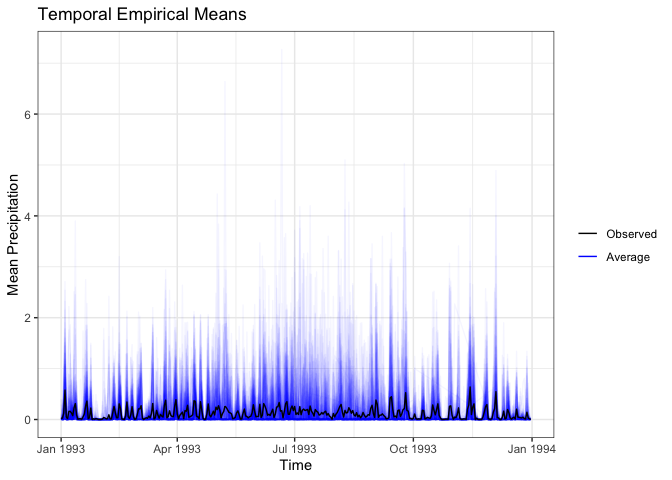
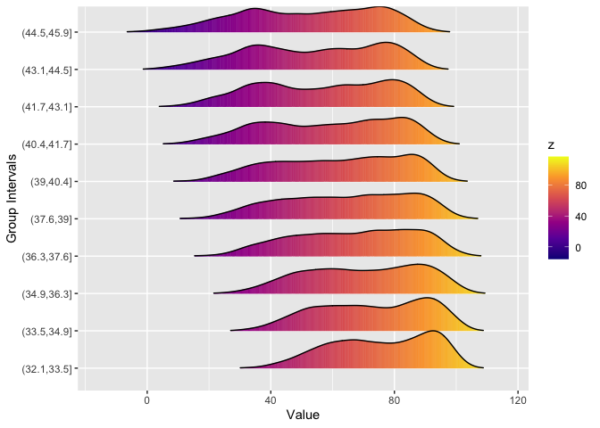

The goal of stxplore is to explore spatio-temporal data. It can take in either dataframes or stars objects. It is a tool for exploratory data analysis.
Installation
You can install the development version of stxplore from GitHub with:
# install.packages("devtools")
devtools::install_github("sevvandi/stxplore")A quick introduction
Let’s first explore some spatio-temporal data using dataframes. The dataset NOAA_df_1990 has temperature and precipitation for from 1990 to 1993 for selected locations.
library(stxplore)
library(dplyr)
#>
#> Attaching package: 'dplyr'
#> The following objects are masked from 'package:stats':
#>
#> filter, lag
#> The following objects are masked from 'package:base':
#>
#> intersect, setdiff, setequal, union
data("NOAA_df_1990")
precip <- filter(NOAA_df_1990,
proc == "Precip" &
year == 1993)
precip$t <- precip$julian - min(precip$julian) + 1
head(precip)
#> julian year month day id z proc lat lon date t
#> 1 727930 1993 1 1 3804 0.00 Precip 39.35 -81.43333 1993-01-01 1
#> 2 727931 1993 1 2 3804 0.00 Precip 39.35 -81.43333 1993-01-02 2
#> 3 727932 1993 1 3 3804 0.03 Precip 39.35 -81.43333 1993-01-03 3
#> 4 727933 1993 1 4 3804 0.37 Precip 39.35 -81.43333 1993-01-04 4
#> 5 727934 1993 1 5 3804 0.09 Precip 39.35 -81.43333 1993-01-05 5
#> 6 727935 1993 1 6 3804 0.00 Precip 39.35 -81.43333 1993-01-06 6The z variable has precipitation in this in dataset. Let’s visualize the mean precipitation over time.
tem <- temporal_means(precip,
t_col = 'date',
z_col = 'z',
id_col = 'id')
autoplot(tem,
ylab = "Mean Precipitation") Let’s look at minimum temperature. Let’s first subset the dataset.
tmin <- filter(NOAA_df_1990,
proc == "Tmin" &
year == 1993)Ridgeline plots break up the quantity of interest into several groups and shows its distribution. We use the R package ggridges (Wilke 2021) underneath. In this Ridgeline plot we see how the minimum temperature for higher latitudes is lower.
ridgeline(tmin, group_col = 'lat', z_col = 'z')
#> Warning: `stat(x)` was deprecated in ggplot2 3.4.0.
#> ℹ Please use `after_stat(x)` instead.
#> ℹ The deprecated feature was likely used in the stxplore package.
#> Please report the issue to the authors.
#> Picking joint bandwidth of 3.27
Of course if we group by longitude, there wouldn’t be much difference between the groups. What about the difference over time? Can we see that using Ridgeline plots?
ridgeline(tmin, group_col = 'date', z_col = 'z', num_grps = 12)
#> Picking joint bandwidth of 1.99
Moving on to stars objects
The stars dataset aerosol_australia has aerosol optical thickness over Australia and surrounds for 13 months starting from 2019 December to 2020 December. There were devastating bushfires in Australia during this time. The data was taken from NASA Earth Observations (NEO) website https://neo.gsfc.nasa.gov (“NASA Earth Observations (NEO),” n.d.).
data("aerosol_australia")
aerosol_australia
#> stars object with 3 dimensions and 1 attribute
#> attribute(s):
#> Min. 1st Qu. Median Mean 3rd Qu. Max. NA's
#> aerosol_thickness 1 19 26 27.06014 33 254 13585
#> dimension(s):
#> from to offset delta refsys point values x/y
#> x 1 70 110 1 WGS 84 FALSE NULL [x]
#> y 1 70 0 -1 WGS 84 FALSE NULL [y]
#> date 1 13 NA NA Date NA 2019-12-01,...,2020-12-01
temp_means <- temporal_means(aerosol_australia)
autoplot(temp_means)
#> Warning: Removed 6513 rows containing missing values (`geom_line()`).
ridgeline(aerosol_australia, group_dim = 3, num_grps = 13)
#> Picking joint bandwidth of 1.72
We can see that during December and January there aerosols were much higher compared to other months.
The making of stxplore
In 2017, Chris Wikle and Petra Kunhert taught a short course titled An Introduction to Statistics for Spatio-Temporal Data. The course was based on two books:
- Statistics for Spatio-Temporal Data by Noel Cressie and Christopher K. Wikle (Cressie and Wikle 2015)
- Spatio-Temporal Statistics with R by Christopher K. Wikle, Andrew Zammit-Mangion and Noel Cressie (Wikle, Zammit-Mangion, and Cressie
There had been some discussions in making a separate package for spatio-temporal exploration. Even though there are many packages for spatio-temporal modelling, exploration is rarely given the spotlight. Many years later, Petra mentioned this to me and I’ve been involved in making it a reality.